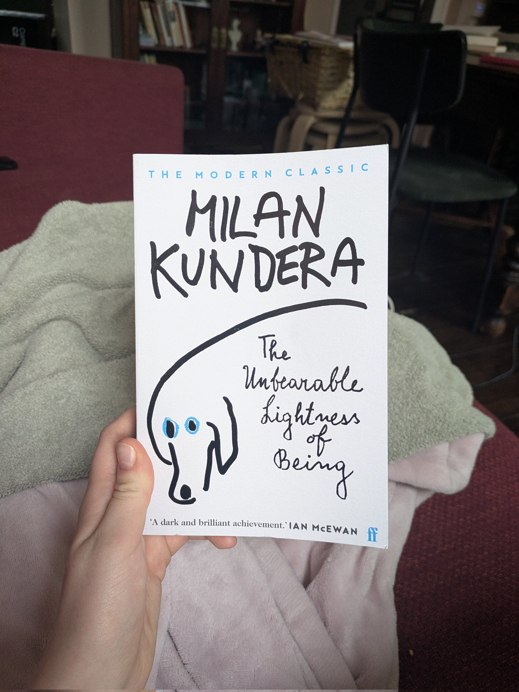
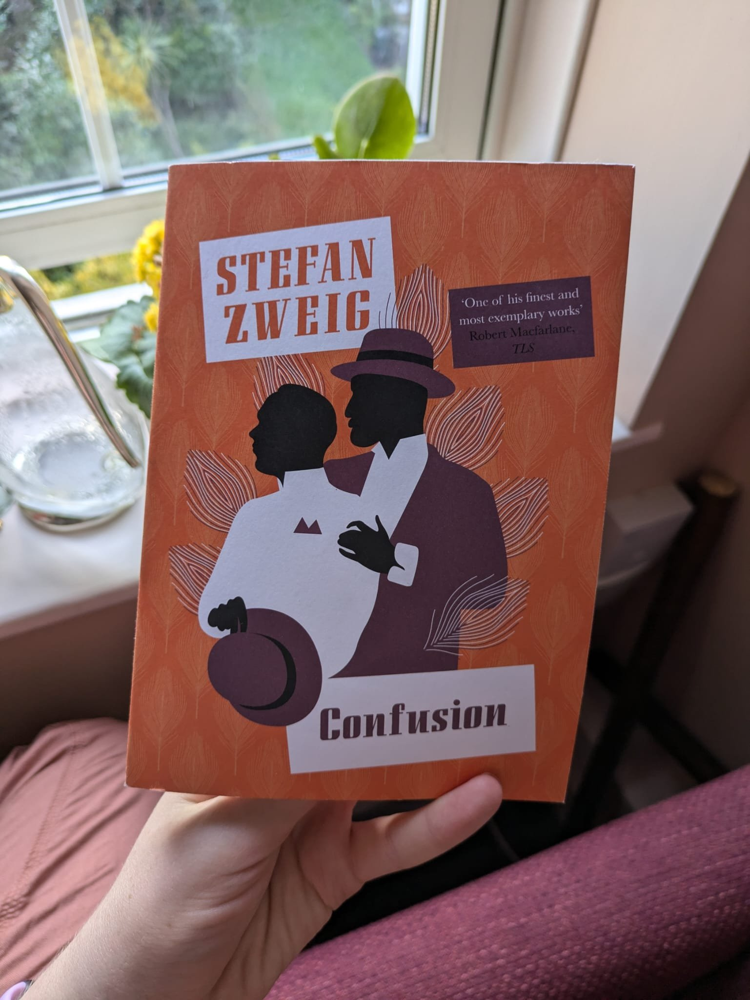
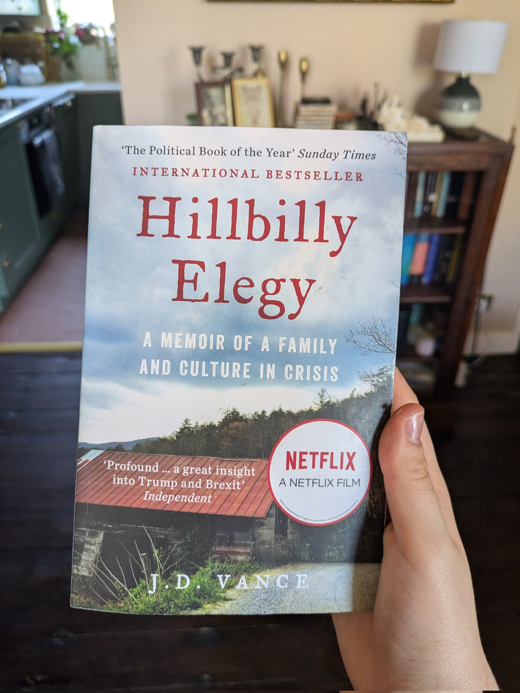
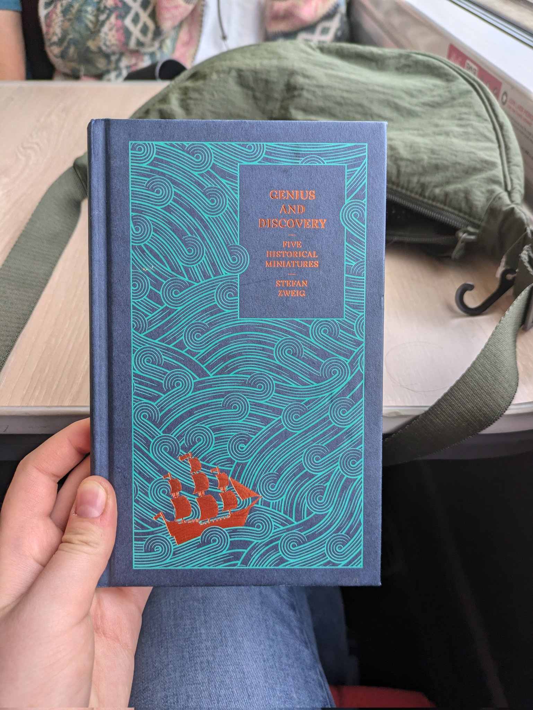
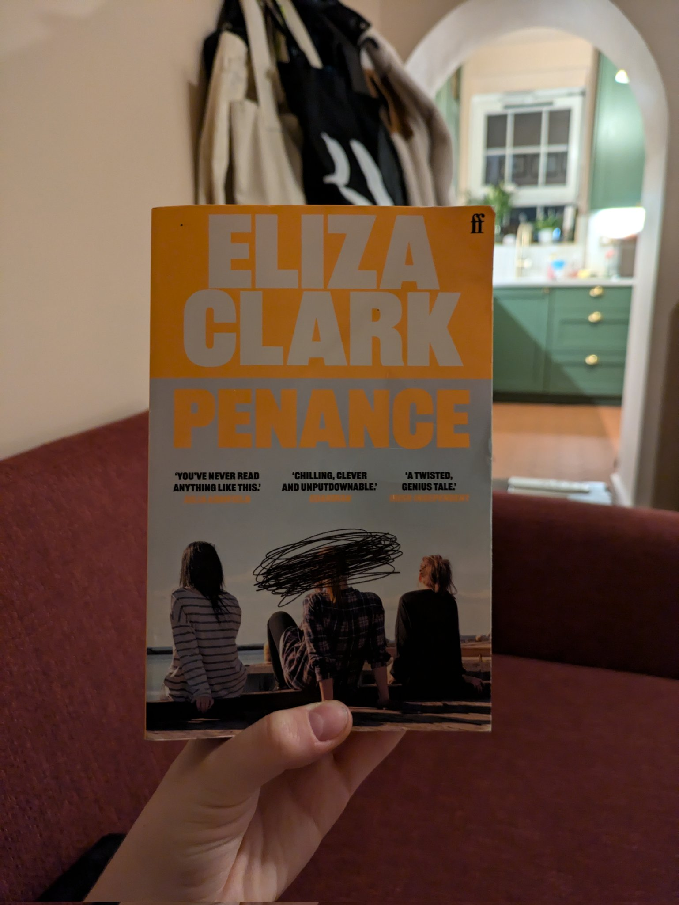
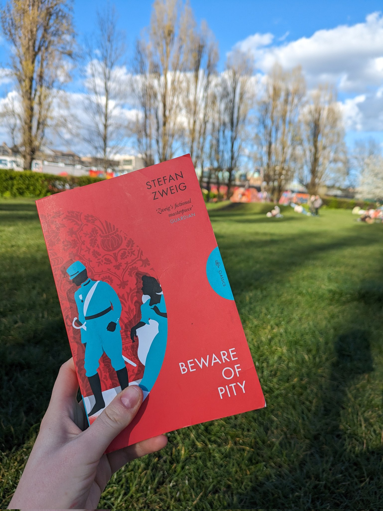
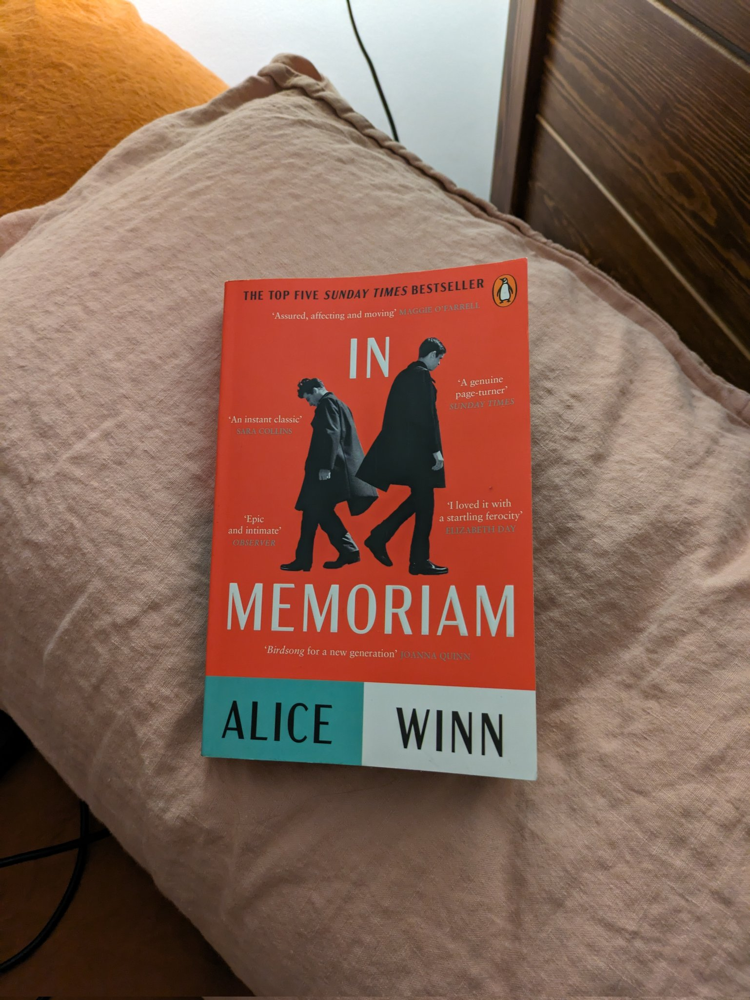
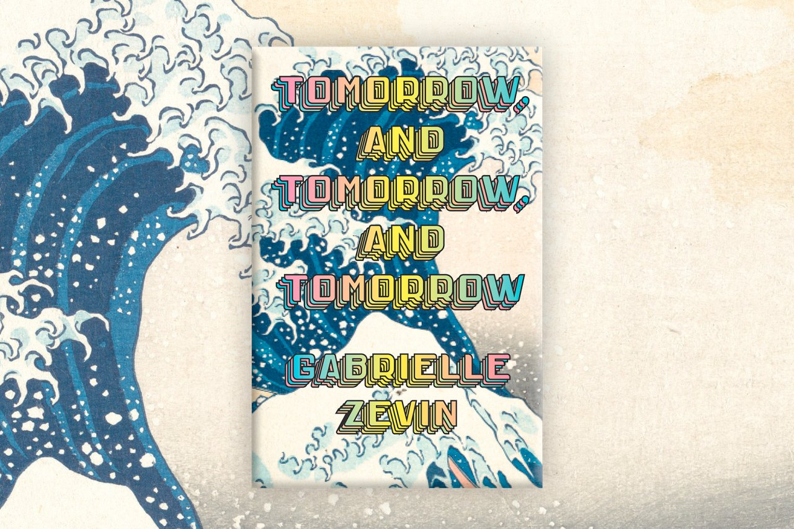
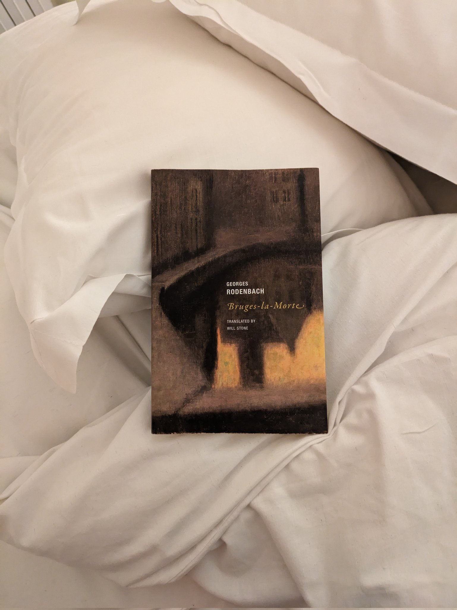
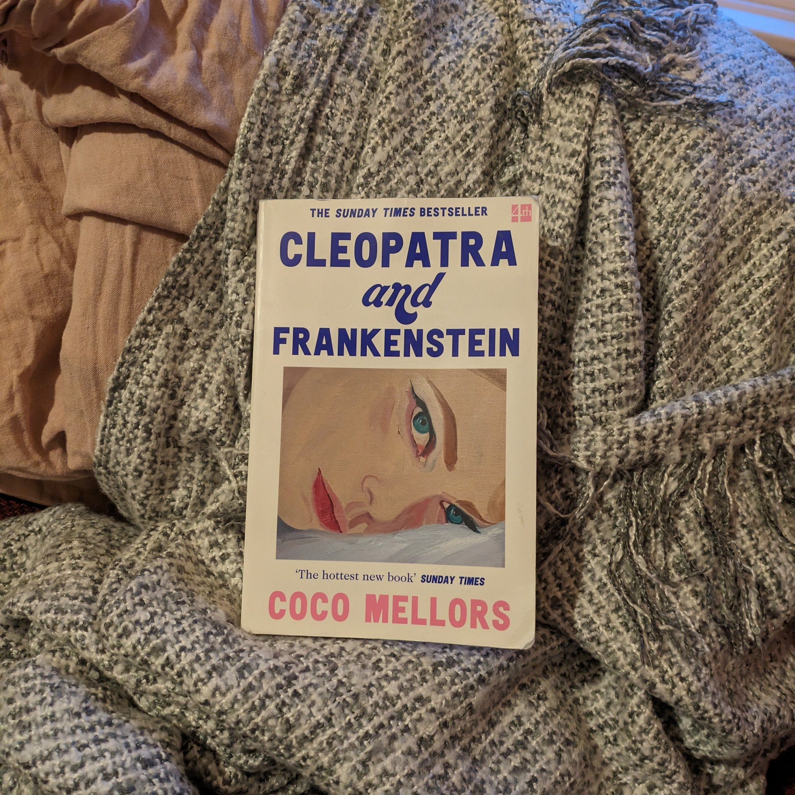

✦ Rachel Edwards ✦
Books I read in 2024

The Unbearable Lightness of Being, by Milan Kundera
An old favourite which has affected my inner monologue as few books do. A friend asked me recently: what inner conflicts/tension am I carrying with me that I won't resolve? About half of them are in here.

The Happy Couple, by Naoise Dolan
Practically inhaled this today. Was almost late to a dinner party in my own house because I read 170 pages in one sitting and forgot time was passing. Couldn't really tell you why.

Confusion, by Stefan Zweig
When you have a long train journey on a warm day – you can't do better than a short book about Shakespeare & repressed passion. Zweig is fast becoming my favourite writer.

Hillbilly Elegy, by J. D. Vance
Vance's story of his difficult upbringing, neatly (& some might say cynically) packaged to support his political career. Makes his case for the importance of stable, loving families, and the value of good networks. Highly readable.

Genius and Discovery: Five Historical Miniatures, by Stefan Zweig
From Handel writing Messiah to the laying of the first transatlantic telegraph cable – Zweig narratives five "fateful hours" in the history of mankind. I loved this book, it's a little gem.

Penance, by Eliza Clarke
Three teenage girls commit a horrifying murder. Extremely fucked-up. Couldn't put it down. This must be how it feels to get obsessed with true crime. Interestingly, the first novel I've read where characters have Tumblr accounts.

Beware of Pity, by Stefan Zweig
Compelling account of an Austrian cavalry officer in 1913 who makes a series of increasingly terrible decisions, after accidentally offending a lame girl by asking her to dance. I was yelling aloud in frustration with this absurd man. Great book.

In Memoriam, by Alice Winn
WWI romance between two permanently distraught teenage boys – at boarding school and in the trenches. Mawkish and shallow. Still cried my eyes out. Full of obituaries.

Tomorrow and Tomorrow and Tomorrow, by Gabrielle Zevin
A shockingly good book about video games, friendship, and things going wrong. Tried to read it in the living room on holiday, but started crying and had to exile myself.

Bruges-la-Morte, by Georges Rodenbach
A melancholy portrait of grief & obsession in a dead city. First published 1892 & thought to be the first work of fiction illustrated with photographs. Completely mesmerising: I read it in 2 days.

Cleopatra and Frankenstein, by Coco Mellors
An impulsive marriage fractures and disintegrates. Vibey & interesting throughout but it didn't hit like I wanted it to.